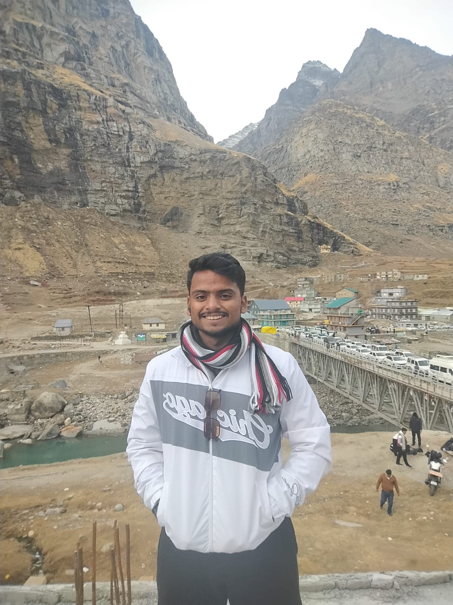

I am a

I’m a B.Tech Computer Science student specializing in Artificial Intelligence and Machine Learning at K.R. Mangalam University, with a strong foundation in programming and web development. I work with technologies like Python, Java, C++, and JavaScript, and I genuinely enjoy turning ideas into real, working projects. I like building things that are not just functional but actually useful—whether it’s a web application or a problem-solving tool. I’m constantly exploring new technologies, improving my skills, and pushing myself to get better with every project I take on. I’m someone who believes in learning by doing and growing consistently. My aim is to contribute to impactful and innovative software solutions while gaining real-world experience. And long term? I’m focused on building something of my own—a startup that creates meaningful technology and solves real problems.
A simple and responsive calculator built using HTML, CSS, and JavaScript. It performs basic arithmetic operations like addition, subtraction, multiplication, and division.
GitHub RepoA weather forecasting website that shows real-time weather data using an API. Users can search any city and get temperature, humidity, and weather conditions instantly.
Live Demo | GitHub CodeUniversity: K.R. Mangalam University
Bachelor's Degree: Computer Science Engineering [AI-ML]
Email: ujjawal140208@gmail.com
LinkedIn